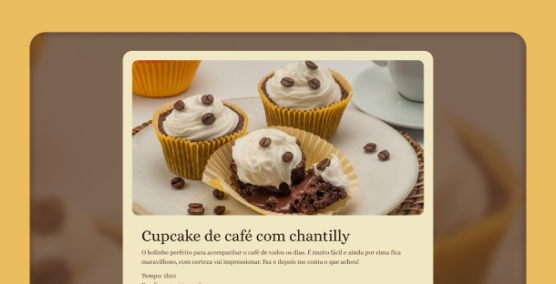
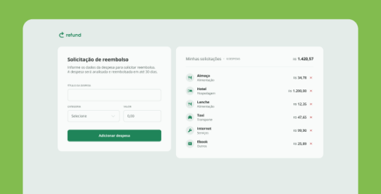
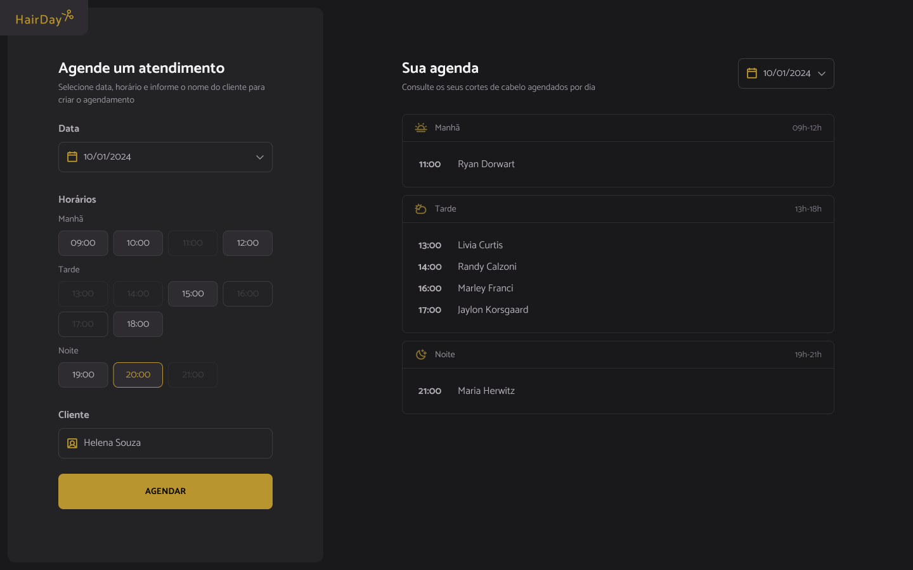

Visão profissional
Tenho experiência em suporte técnico, análise de problemas e sustentação de sistemas, o que me ajuda a desenvolver soluções com mais clareza sobre operação, manutenção e impacto real no dia a dia dos usuários.
Hello World! Meu nome é Tawhin Chiang
Atuo com suporte de TI, análise de demandas, PL/SQL, APIs REST, Java e desenvolvimento de interfaces. Transformo necessidades de negócio em soluções funcionais, bem estruturadas e pensadas para evoluir com manutenção simples.
Minha trajetória une atendimento, análise técnica e desenvolvimento.
Tenho experiência em suporte técnico, análise de problemas e sustentação de sistemas, o que me ajuda a desenvolver soluções com mais clareza sobre operação, manutenção e impacto real no dia a dia dos usuários.
Trabalho com PL/SQL e Java em Relátorios JasperSoft Studio e também venho aprofundando meu conhecimento em HTML, CSS,JavaScript, PL/SQL,Node.js e React para desenvolvimento mobile e interfaces modernas.
Busco crescer como desenvolvedor, participar de projetos inovadores e agregar valor por meio da tecnologia, sempre equilibrando código limpo, boa experiência de uso e fácil manutenção.
Projetos que mostram minha evolução com interfaces, páginas web e produtos digitais.

Rede social com foco em registros visuais de viagens e organização de conteúdo por experiência.

Homepage de portal de notícias com hierarquia visual, destaques editoriais e organização de conteúdo.

Página com passo a passo de receita, foco em leitura fluida e distribuição clara das informações.

Landing page responsiva para aplicativo de karaokê, com foco em conversão, seções de produto e identidade visual.

Sistema para solicitação e acompanhamento de reembolso, pensado para fluxo claro e organização de estados.

Aplicativo web para estudos de consumo de APIs, com listagem, criação e exclusão de agendamentos, organizado em módulos e versionado.

Página informativa com foco em destino turístico, hierarquia de conteúdo e apresentação visual.
Serviços e competências que conectam suporte, desenvolvimento e evolução de produto.
Criação de páginas e interfaces responsivas com foco em clareza, boa experiência de uso e manutenção consistente.
Atuação com APIs REST, consultas SQL, PL/SQL e integração entre front-end e back-end para soluções mais completas.
Experiência com suporte de TI, análise de demandas e evolução de sistemas já em produção, olhando para estabilidade e eficiência.
Vamos conversar sobre projetos, oportunidades e tecnologia.
Se você busca alguém com base técnica, visão prática e vontade constante de evoluir, fico à disposição para trocar uma ideia.